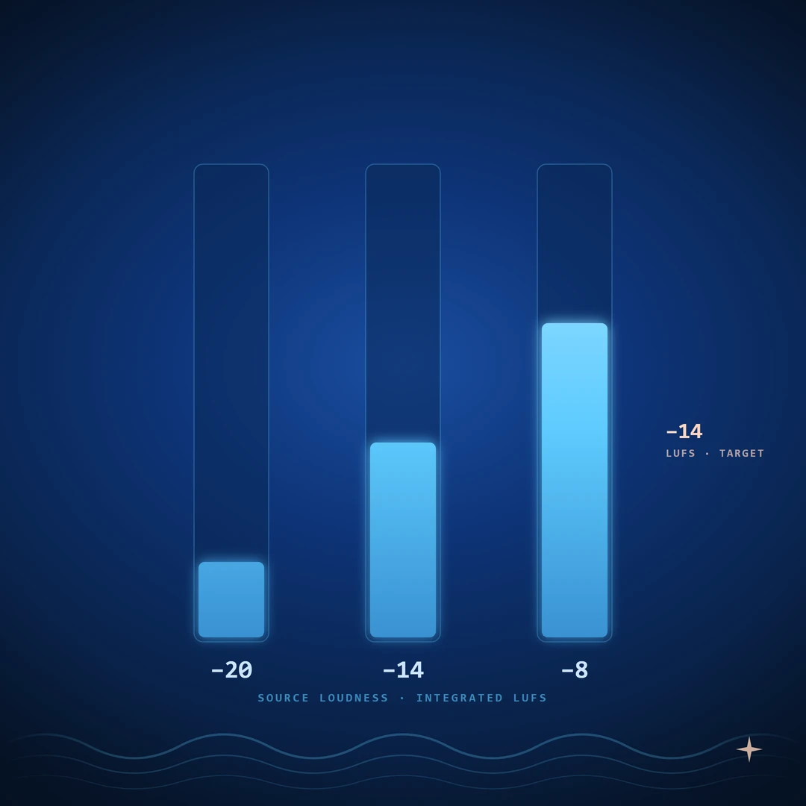

You read that Spotify wants −14 LUFS. You mastered to −14 LUFS. You A/B'd against the commercial reference you have been chasing all month, and your track still sounded quieter.
The published loudness targets are real. They are also misunderstood almost everywhere mastering is discussed, and the most common version of the misunderstanding is treating the published number as a target to hit in the way you hit a true peak ceiling. That framing is left over from the pre-normalization era. It has not been correct for almost a decade.
This article covers what an integrated LUFS reading actually measures, how streaming normalization works mechanically, what each major platform does to your master, and the small workflow that drops out of all of it.
We have written before on the family of meters and how to read them when something is going wrong in the mix. Both introduce LUFS and list the platform numbers. This article assumes those basics and goes one level deeper.
Integrated, short-term, momentary
A LUFS meter shows three readings, not one.
Momentary LUFS is the K-weighted loudness over a 400 ms window. It moves fast. It spikes on transients. It is the closest LUFS gets to a peak-style reading.
Short-term LUFS is the K-weighted loudness over a 3-second window. It is the right read for comparing a verse to a chorus, or for matching section-to-section loudness inside a track.
Integrated LUFS is the K-weighted loudness averaged across the entire measured passage, with a gating function that excludes silence and very-quiet content. When a streaming spec says "−14 LUFS," it always means integrated LUFS measured across the full track.
The three readings answer different questions and they are not interchangeable. Mixing engineers who watch momentary LUFS during a session and assume they are mastering to −14 LUFS are reading the wrong number. The streaming platforms only care about the integrated reading, taken over the full track length.
K-weighting itself is the frequency curve defined by ITU-R BS.1770. It under-counts very low bass and slightly over-counts upper mids — roughly matching how humans perceive loudness. A K-weighted RMS-style integration is what makes a quiet jazz track and a hot pop track at the same integrated LUFS sound, on average, equally loud.
How normalization works
Every modern streaming platform performs the same three steps when you upload a track:
- Measure the file's integrated LUFS and its true peak across the full track.
- Compute a gain offset that would move the file's integrated LUFS to the platform's reference.
- Apply that gain offset, as a single flat number, to the file during playback. The actual file on disk does not change.
The gain offset is a single scalar. The platform is not compressing your track, not multiband-processing it, not changing its dynamics. It is reaching for the volume knob and turning it once, by exactly the amount needed to land the integrated LUFS reading on the reference.
If your track is hotter than the reference, the offset is negative — the platform turns you down. If your track is quieter than the reference, the offset is positive — the platform may or may not turn you up, depending on platform and user setting.
That is the entire mechanism. Once you see it as one number applied flat, the rest of this article follows.
What the platforms actually do
The currently published references, with the relevant behavior:
| Platform | Reference | True Peak Ceiling | Normalize down? | Normalize up? |
|---|---|---|---|---|
| Spotify | −14 LUFS | −1.0 dBTP | Yes (always, in normalized mode) | Yes in "Loud"; no in "Normal" or "Quiet" |
| Apple Music | −16 LUFS | −1.0 dBTP | Yes, when Sound Check is on (default on mobile) | No |
| YouTube | −14 LUFS | −1.0 dBTP | Yes (always) | No |
| Tidal | −14 LUFS | −1.0 dBTP | Yes (always, in normalized mode) | Yes |
| Amazon Music | −14 LUFS | −2.0 dBTP | Yes (always) | Yes |
The numbers shift over time and specific behaviors vary by client version. The pattern does not shift: everyone normalizes downward against a reference between −14 and −16 LUFS, and everyone wants a true peak ceiling below 0 dBFS. Upward normalization is the variable; downward is the constant.
True peak is a separate topic. If you have not seen True Peak vs Sample Peak, the short version is that codecs and consumer playback chains can lift the reconstructed signal 1–2 dB above the file's sample peak, and the platforms set the ceiling to give themselves a margin. The rest of this article is about the loudness number.
What hitting the target does and does not do
Given the mechanism, hitting the published reference exactly accomplishes one specific thing: it leaves the platform's gain offset close to zero, so the track plays at the level it was mastered at.
It does not make the track louder than its neighbors. The neighbors are also being normalized to the same reference. The reference is the destination for every track in the catalog.
It does not save a poorly-balanced mix. A muddy, narrow track reads −14 LUFS just fine and still sounds smaller than a wide, well-balanced track at the same reading. Once normalization equalizes the loudness, the listener's comparison is happening on balance, tone, dynamics, and stereo image — not on level.
What hitting the reference does control, in practice:
The dynamic delta that survives playback. A track mastered to −8 LUFS and turned down to −14 by Spotify still has the same internal loud-to-quiet ratio as it had at master, but every passage is now 6 dB quieter than the limiter let it be at the file level. The dynamic delta between a chorus and a verse is preserved, but the peaks no longer reach as high above the perceived loudness floor. A track mastered to −14 LUFS with a less aggressive limiter has more usable headroom for transient impact at playback. Dynamic snap is what listeners perceive as energy under normalization, because they cannot perceive level anymore.
Down-normalize avoidance versus up-normalize ambiguity. Mastering far below the reference puts you at the mercy of the user's playback setting. On Spotify "Normal" mode your −20 LUFS track plays at −20 LUFS and sounds quieter than the song before it. On Spotify "Loud" mode it gets pulled up, which costs you transient headroom and may push the limiter the platform applies above its true peak ceiling. Neither outcome is good. Mastering at or 1 dB under the reference avoids both edges.
Codec margin. A track sitting near the reference, with a true-peak-aware limiter at −1.0 dBTP, has comfortable codec margin downstream. A track pushed well above the reference does not — and it is exactly the kind of master where lossy codec decoding causes audible clipping on phones and laptops.
The workflow
Once the mechanism is in view, the streaming-era mastering workflow is short.
- Mix to leave headroom. Aim for an integrated bus reading around −16 to −20 LUFS at the end of the mix, with peaks well below the master ceiling. The master limiter should be catching, not shaping.
- Master to the reference, or 1 dB under. −14 LUFS integrated is the default for Spotify, YouTube, Tidal, Amazon. −16 LUFS if Apple Music is the primary target. There is no benefit to going further below the reference unless the music itself wants the dynamics.
- Hold the true peak ceiling. −1.0 dBTP across the board, −2.0 dBTP for Amazon and anything destined for FM downstream.
- Commit on the integrated reading, not the momentary or short-term. Let the meter integrate the full track length, then read.
- Verify with a matched-loudness A/B. Pull a commercial reference into the session, normalize it to the same integrated LUFS as your master, and compare. This is the test that exposes whether the master is competitive on the things normalization does not take away.
Step 5 is the one most engineers skip and the one that answers the "why is mine quieter than theirs" complaint that opens this article. At matched loudness, the gap is rarely loudness. It is bass weight, top-end air, stereo width, transient definition, or balance between elements. Those are the things that survive the platform's volume knob.
The short version
- LUFS is integrated, K-weighted loudness. The streaming platforms care about the integrated reading, taken over the full track.
- Normalization works by measuring your file's integrated LUFS, computing a single gain offset against the platform's reference, and applying that offset flat at playback.
- Mastering at the reference leaves the gain offset near zero. Mastering above gets you turned down. Mastering below either gets you turned up (losing transient headroom) or leaves you sounding quieter than your neighbors.
- The published number controls the dynamic delta at playback, down-normalize avoidance, and codec margin — not loudness, which normalization decides.
- −14 LUFS integrated, −1.0 dBTP is a safe default for streaming-first work in 2026.
- The competitive edge under normalization is the mix and master inside the reference level. Verify with a matched-loudness A/B.
A meter that shows integrated LUFS, momentary LUFS, short-term LUFS, true peak, and the frequency-band energy split together is the cheapest way to stop guessing whether the master is doing its job at the level it is going to be played at.
Ready to check your own master? Try the Mix Analyzer — a free browser-based tool that measures loudness, true peak, dynamics, stereo image, and tonal balance.
Want the next one when it lands — gain staging, tonal balance, more on metering? Join the metering plugin waitlist. The same list gets new articles too.
← Back to Articles ↑ Back to Top